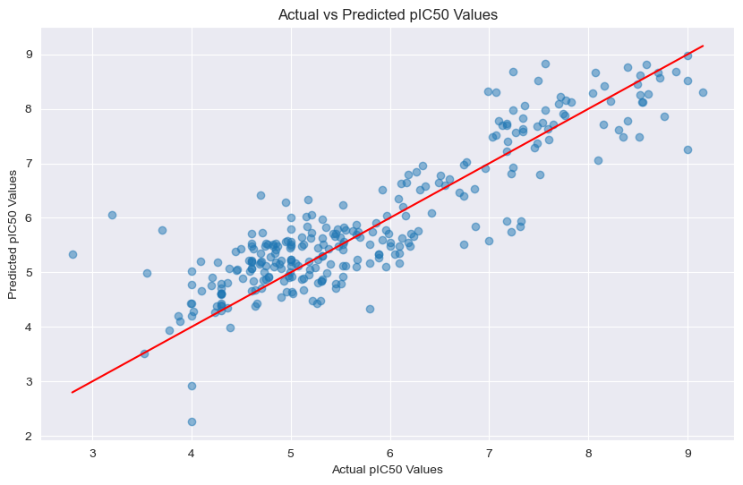

Graph Neural Network Prediction#
from rdkit import Chem
from rdkit.Chem import rdmolops
import torch
import torch.nn.functional as F
import torch.nn as nn
from torch_geometric.data import Data, Dataset
from torch_geometric.loader import DataLoader
from torch_geometric.nn import GCNConv, global_mean_pool
import torch.optim as optim
import pandas as pd
from sklearn.metrics import mean_absolute_error, r2_score
import matplotlib.pyplot as plt
from sklearn.model_selection import train_test_split
from sklearn.preprocessing import StandardScaler
data_df = pd.read_csv('/Users/mohanyang/Documents/GitHub/pIC50_prediction_book/pIC50_prediction/notebooks/gnn_dataset.csv')
def smiles_to_graph(smiles):
mol = Chem.MolFromSmiles(smiles)
if mol is None:
return None
adjacency_matrix = rdmolops.GetAdjacencyMatrix(mol)
# Extract atom-level features
atom_features = []
for atom in mol.GetAtoms():
atom_feature = [
atom.GetAtomicNum(), # Atomic number
atom.GetDegree(), # Atom degree (number of bonds)
atom.GetFormalCharge(), # Formal charge
atom.GetTotalNumHs(), # Number of hydrogens
atom.GetIsAromatic() # Whether the atom is aromatic
]
atom_features.append(atom_feature)
atom_features = torch.tensor(atom_features, dtype=torch.float)
edge_index = torch.nonzero(torch.tensor(adjacency_matrix), as_tuple=False).t().contiguous()
return Data(x=atom_features, edge_index=edge_index)
class SMILESDataset(Dataset):
def __init__(self, dataframe):
self.dataframe = dataframe
def __len__(self):
# This should return the number of entries in the dataset
return len(self.dataframe)
def __getitem__(self, idx):
# Get the SMILES string and pIC50 value
smiles = self.dataframe.iloc[idx, 0]
pIC50 = self.dataframe.iloc[idx, 1]
# Convert SMILES to graph
graph_data = smiles_to_graph(smiles)
if graph_data is None:
# Handle invalid SMILES here
# Optionally return a dummy graph if needed
return Data(x=torch.tensor([[0]], dtype=torch.float), edge_index=torch.tensor([[0], [0]], dtype=torch.long), y=torch.tensor([pIC50], dtype=torch.float))
# Add target value (pIC50) as y
graph_data.y = torch.tensor([pIC50], dtype=torch.float)
return graph_data
class GCN(torch.nn.Module):
def __init__(self, input_dim, hidden_dim, output_dim):
super(GCN, self).__init__()
self.conv1 = GCNConv(input_dim, hidden_dim)
self.conv2 = GCNConv(hidden_dim, hidden_dim)
self.conv3 = GCNConv(hidden_dim, hidden_dim)
self.fc1 = torch.nn.Linear(hidden_dim, hidden_dim // 2)
self.fc2 = torch.nn.Linear(hidden_dim // 2, output_dim)
self.dropout = nn.Dropout(0.2)
def forward(self, data):
x, edge_index, batch = data.x, data.edge_index, data.batch
x = F.relu(self.conv1(x, edge_index))
x = self.dropout(x) # Dropout after first GCN layer
x = F.relu(self.conv2(x, edge_index))
x = self.dropout(x) # Dropout after second GCN layer
x = F.relu(self.conv3(x, edge_index))
x = global_mean_pool(x, batch)
# Pass through the first fully connected layer
x = F.relu(self.fc1(x)) # Apply ReLU to the first fully connected layer
# Apply dropout after first fully connected layer
x = self.dropout(x)
# Pass through the second fully connected layer for final output
x = self.fc2(x)
return x
# Define the model
model = GCN(input_dim=5, hidden_dim=1024, output_dim=1)
# Define optimizer and loss function
optimizer = optim.Adam(model.parameters(), lr=0.001)
criterion = torch.nn.MSELoss()
def train(model, data_loader, epochs=1000):
model.train()
for epoch in range(epochs):
total_loss = 0
for data in data_loader:
optimizer.zero_grad()
output = model(data) # The batch of graphs is passed directly to the model
target = data.y.view(-1, 1)
loss = criterion(output, target) # data.y is the pIC50 value for each graph
loss.backward()
optimizer.step()
total_loss += loss.item()
print(f"Epoch {epoch + 1}, Loss: {total_loss / len(data_loader)}")
dataset = SMILESDataset(data_df)
valid_data = [data for data in dataset if data is not None]
train_data, test_data = train_test_split(valid_data, test_size=0.2, random_state=42)
train_loader = DataLoader(train_data, batch_size=32, shuffle=True)
test_loader = DataLoader(test_data, batch_size=32, shuffle=False)
train(model, train_loader)
Epoch 1, Loss: 5.882516101002693
Epoch 2, Loss: 2.015946509109603
Epoch 3, Loss: 1.6263725774155722
Epoch 4, Loss: 1.524399318628841
Epoch 5, Loss: 1.5418116201957066
Epoch 6, Loss: 1.481135156419542
Epoch 7, Loss: 1.4963130089971755
Epoch 8, Loss: 1.4454347524378035
Epoch 9, Loss: 1.505301962296168
Epoch 10, Loss: 1.576988751689593
Epoch 11, Loss: 1.4762991302543216
Epoch 12, Loss: 1.4460203233692381
Epoch 13, Loss: 1.4760896745655272
Epoch 14, Loss: 1.6976967487070296
Epoch 15, Loss: 1.560384925868776
Epoch 16, Loss: 1.5513030721081629
Epoch 17, Loss: 1.5347633924749162
Epoch 18, Loss: 1.3678328626685672
Epoch 19, Loss: 1.4595296598143048
Epoch 20, Loss: 1.424330888522996
Epoch 21, Loss: 1.5779083834754095
---------------------------------------------------------------------------
KeyboardInterrupt Traceback (most recent call last)
Cell In[8], line 1
----> 1 train(model, train_loader)
Cell In[6], line 17, in train(model, data_loader, epochs)
15 loss = criterion(output, target) # data.y is the pIC50 value for each graph
16 loss.backward()
---> 17 optimizer.step()
18 total_loss += loss.item()
19 print(f"Epoch {epoch + 1}, Loss: {total_loss / len(data_loader)}")
File /opt/miniconda3/lib/python3.12/site-packages/torch/optim/optimizer.py:484, in Optimizer.profile_hook_step.<locals>.wrapper(*args, **kwargs)
479 else:
480 raise RuntimeError(
481 f"{func} must return None or a tuple of (new_args, new_kwargs), but got {result}."
482 )
--> 484 out = func(*args, **kwargs)
485 self._optimizer_step_code()
487 # call optimizer step post hooks
File /opt/miniconda3/lib/python3.12/site-packages/torch/optim/optimizer.py:89, in _use_grad_for_differentiable.<locals>._use_grad(self, *args, **kwargs)
87 torch.set_grad_enabled(self.defaults["differentiable"])
88 torch._dynamo.graph_break()
---> 89 ret = func(self, *args, **kwargs)
90 finally:
91 torch._dynamo.graph_break()
File /opt/miniconda3/lib/python3.12/site-packages/torch/optim/adam.py:226, in Adam.step(self, closure)
214 beta1, beta2 = group["betas"]
216 has_complex = self._init_group(
217 group,
218 params_with_grad,
(...)
223 state_steps,
224 )
--> 226 adam(
227 params_with_grad,
228 grads,
229 exp_avgs,
230 exp_avg_sqs,
231 max_exp_avg_sqs,
232 state_steps,
233 amsgrad=group["amsgrad"],
234 has_complex=has_complex,
235 beta1=beta1,
236 beta2=beta2,
237 lr=group["lr"],
238 weight_decay=group["weight_decay"],
239 eps=group["eps"],
240 maximize=group["maximize"],
241 foreach=group["foreach"],
242 capturable=group["capturable"],
243 differentiable=group["differentiable"],
244 fused=group["fused"],
245 grad_scale=getattr(self, "grad_scale", None),
246 found_inf=getattr(self, "found_inf", None),
247 )
249 return loss
File /opt/miniconda3/lib/python3.12/site-packages/torch/optim/optimizer.py:161, in _disable_dynamo_if_unsupported.<locals>.wrapper.<locals>.maybe_fallback(*args, **kwargs)
159 return disabled_func(*args, **kwargs)
160 else:
--> 161 return func(*args, **kwargs)
File /opt/miniconda3/lib/python3.12/site-packages/torch/optim/adam.py:766, in adam(params, grads, exp_avgs, exp_avg_sqs, max_exp_avg_sqs, state_steps, foreach, capturable, differentiable, fused, grad_scale, found_inf, has_complex, amsgrad, beta1, beta2, lr, weight_decay, eps, maximize)
763 else:
764 func = _single_tensor_adam
--> 766 func(
767 params,
768 grads,
769 exp_avgs,
770 exp_avg_sqs,
771 max_exp_avg_sqs,
772 state_steps,
773 amsgrad=amsgrad,
774 has_complex=has_complex,
775 beta1=beta1,
776 beta2=beta2,
777 lr=lr,
778 weight_decay=weight_decay,
779 eps=eps,
780 maximize=maximize,
781 capturable=capturable,
782 differentiable=differentiable,
783 grad_scale=grad_scale,
784 found_inf=found_inf,
785 )
File /opt/miniconda3/lib/python3.12/site-packages/torch/optim/adam.py:380, in _single_tensor_adam(params, grads, exp_avgs, exp_avg_sqs, max_exp_avg_sqs, state_steps, grad_scale, found_inf, amsgrad, has_complex, beta1, beta2, lr, weight_decay, eps, maximize, capturable, differentiable)
378 # Decay the first and second moment running average coefficient
379 exp_avg.lerp_(grad, 1 - beta1)
--> 380 exp_avg_sq.mul_(beta2).addcmul_(grad, grad.conj(), value=1 - beta2)
382 if capturable or differentiable:
383 step = step_t
KeyboardInterrupt:
def evaluate_model(model, test_loader):
model.eval() # Set the model to evaluation mode
total_loss = 0
actuals = []
predictions = []
with torch.no_grad(): # Disable gradient calculation
for data in test_loader:
output = model(data)
target = data.y.view(-1, 1)
loss = criterion(output, target)
total_loss += loss.item()
# Store actual and predicted values for later use
actuals.extend(data.y.cpu().numpy())
predictions.extend(output.cpu().numpy())
# Calculate MAE
mae = mean_absolute_error(actuals, predictions)
return total_loss / len(test_loader), mae, actuals, predictions
# Assuming you have a DataLoader for the test set
vloss, mae, y_test, y_pred = evaluate_model(model, test_loader)
print(f'Test Mean Absolute Error: {mae}')
Test Mean Absolute Error: 0.4875187277793884
plt.figure(figsize=(10, 6))
plt.scatter(y_test, y_pred, alpha=0.5)
plt.xlabel('Actual pIC50 Values')
plt.ylabel('Predicted pIC50 Values')
plt.title('Actual vs Predicted pIC50 Values')
plt.plot([min(y_test), max(y_test)], [min(y_test), max(y_test)], color='red') # Line of equality
plt.show()

# Calculate R² Score
r2 = r2_score(y_test, y_pred)
print(f'R² Score: {r2}')
R² Score: 0.774853582051455